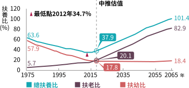
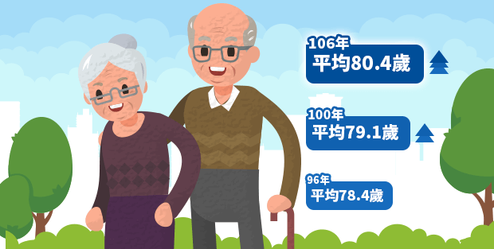

退休的道路有二種：顛簸v.s平順，你的選擇是…
小資族
身在薪水凍漲、物價齊漲的年代，僅剩的薪水存餘還要用來創造生活的小確幸，知道退休準備的重要性，但開始準備退休金往往淪為「明天的事」。
夾心族
上有老下有小，付完房貸、車貸、家用支出後已所剩無幾，生活壓力如山大，有退休準備的意識，實際執行卻心有餘而力不足。
退休族
養兒防老觀念已過時，當今兒女不啃老就要慶幸了，多數人實際退休金準備金與期待有落差，「下流老人」、「晚退」等現象漸漸浮現…
各世代煩惱大不同，相同的是…都跳脫不了「退休」議題。
年輕人更要儘早準備退休，因為…
現年45歲，20年後，扶老+扶幼比率達70%
現年20歲，45年後，扶老+扶幼比率達100%，壓力滿點！
現年20歲，45年後，扶老+扶幼比率達100%，壓力滿點！

資料來源：國家發展委員會「中華民國人口推估（2018至2065年）」 ， 2018年8月。扶養比是指每100位有生產能力的成人(在15歲~64歲)所扶養或負擔無生產能力(在14歲以下和65歲以上)的人口比例。
太過長壽竟是煩惱？
因為退休金要準備更多！
國人平均壽命80.4歲，創歷史新高，
實際退休年齡55歲，退休金缺口將近0年！
實際退休年齡55歲，退休金缺口將近0年！

資料來源：內政部「106年簡易生命表」，國人的平均壽命為80.4歲，其中男性77.3歲、女性83.7歲，皆創歷年新高。從六都來看，男、女性平均壽命均以台北市最高，呈現自北而南遞減的情形。與全球平均壽命相比，我國男、女性的平均壽命均高於全球平均水準，但皆低於日本、西班牙、新加坡等國家，日本仍是世界上最長壽的國家。
我想準備退休金但不知如何開始？
立即搞懂台灣人退休三階段的面貌，才有因應之道！